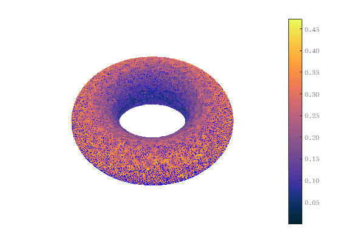

WME_mean_curv
Estimate the mean curvature field for submanifold point cloud
Contents
Syntax
- meanCurvVec = WME_mean_curv(X, intDim)
- [meanCurvVec, absMeanCurv] = WME_mean_curv(X, intDim)
- [meanCurvVec, absMeanCurv] = WME_mean_curv(..., name, value)
Description
- meanCurvVec = WME_mean_curv(X, intDim) produces a matrix of the same size as X representing the mean curvature field on X
- [meanCurvVec, absMeanCurv] = WME_mean_curv(X, intDim) produces the mean vector field meanCurvVec and the absolute mean curvature absMeanCurv
- [meanCurv, absMeanCurv] = WME_mean_curv(..., name, value) specifies the local neighbor parameter manually:
- - 'PCAkNN': specifies the kNN parameter in tangent/normal spaces estimation
- - 'LSkNN': specifies the kNN parameter in the Weingarten map estimation
Example
X = WME_torus(1e5, 5, 2); [meanCurvVec, absMeanCurv] = WME_mean_curv(X,2,'PCAkNN',100,'LSkNN',30); WME_draw_points(X,'curv',absMeanCurv,'colorbar','%.2f') hold on WME_draw_normals(X, -meanCurvVec, 'scale', 1.5) hold off
The point cloud consists of 100000 points sampled from 2 dim submanifold in 3 dim Euclidean space
Contact
Author: Yueqi Cao Email: bityueqi@gmail.com Web: https://yueqihome.site